# load required library
library(tidyverse)
library(cowplot)
library(palmerpenguins)Figure Design Exercise Solutions
Coding exercise 7.2
In this worksheet, we will discuss how to change and customize themes.
We will be using the R package tidyverse, which includes ggplot() and related functions. We will also be using the packages cowplot for themes and the package palmerpenguins for the penguins dataset.
We will be working with the dataset penguins containing data on individual penguins on Antarctica.
penguins# A tibble: 344 × 8
species island bill_length_mm bill_depth_mm flipper_length_mm body_mass_g
<fct> <fct> <dbl> <dbl> <int> <int>
1 Adelie Torgersen 39.1 18.7 181 3750
2 Adelie Torgersen 39.5 17.4 186 3800
3 Adelie Torgersen 40.3 18 195 3250
4 Adelie Torgersen NA NA NA NA
5 Adelie Torgersen 36.7 19.3 193 3450
6 Adelie Torgersen 39.3 20.6 190 3650
7 Adelie Torgersen 38.9 17.8 181 3625
8 Adelie Torgersen 39.2 19.6 195 4675
9 Adelie Torgersen 34.1 18.1 193 3475
10 Adelie Torgersen 42 20.2 190 4250
# ℹ 334 more rows
# ℹ 2 more variables: sex <fct>, year <int>Ready-made themes
Let’s start with this simple plot with no specific styling.
ggplot(penguins, aes(flipper_length_mm, body_mass_g, color = species)) +
geom_point(na.rm = TRUE) # na.rm = TRUE prevents warning about missing values
The default ggplot theme is theme_gray(). Verify that adding this theme to the plot makes no difference in the output. Then change the overall font size by providing the theme function with a numeric font size argument, e.g. theme_gray(16).
ggplot(penguins, aes(flipper_length_mm, body_mass_g, color = species)) +
geom_point(na.rm = TRUE) +
___# solution
ggplot(penguins, aes(flipper_length_mm, body_mass_g, color = species)) +
geom_point(na.rm = TRUE) +
theme_gray()
ggplot(penguins, aes(flipper_length_mm, body_mass_g, color = species)) +
geom_point(na.rm = TRUE) +
theme_gray(16)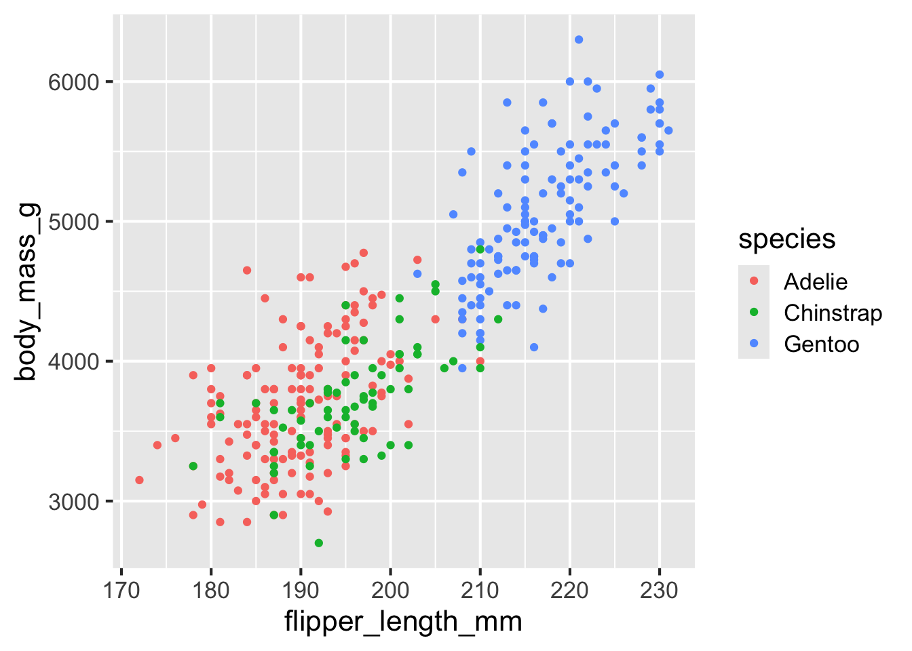
The ggplot2 package has many built-in themes, including theme_minimal(), theme_bw(), theme_void(), theme_dark(). Try these different themes on the above plot. Also try again changing the font size. You can see all themes provided by ggplot2 here: https://ggplot2.tidyverse.org/reference/ggtheme.html
# build all the code for this exercise
#| eval: TRUE
#| echo: TRUE
# solution
ggplot(penguins, aes(flipper_length_mm, body_mass_g, color = species)) +
geom_point(na.rm = TRUE) +
theme_bw(12)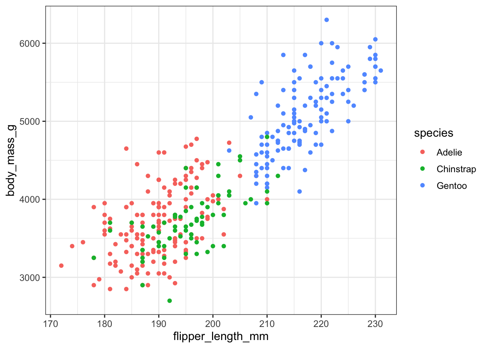
ggplot(penguins, aes(flipper_length_mm, body_mass_g, color = species)) +
geom_point(na.rm = TRUE) +
theme_minimal(14)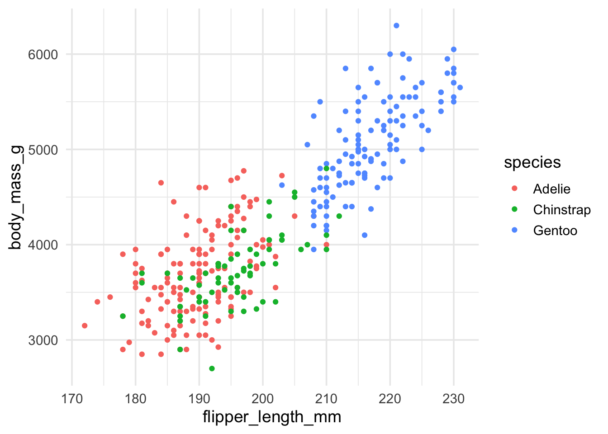
ggplot(penguins, aes(flipper_length_mm, body_mass_g, color = species)) +
geom_point(na.rm = TRUE) +
theme_void()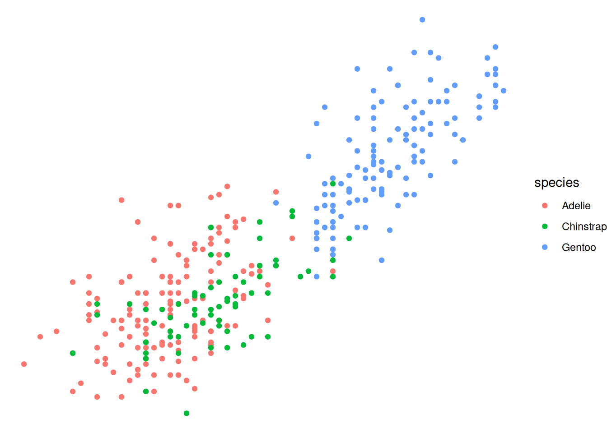
Many other packages also provide themes. For example, the cowplot package provides themes theme_half_open(), theme_minimal_grid(), theme_minimal_hgrid(), and theme_minimal_vgrid(). You can see all cowplot themes here: https://wilkelab.org/cowplot/articles/themes.html
#| eval: TRUE
#| echo: TRUE
# build all the code for this exercise
# solution
ggplot(penguins, aes(flipper_length_mm, body_mass_g, color = species)) +
geom_point(na.rm = TRUE) +
theme_half_open()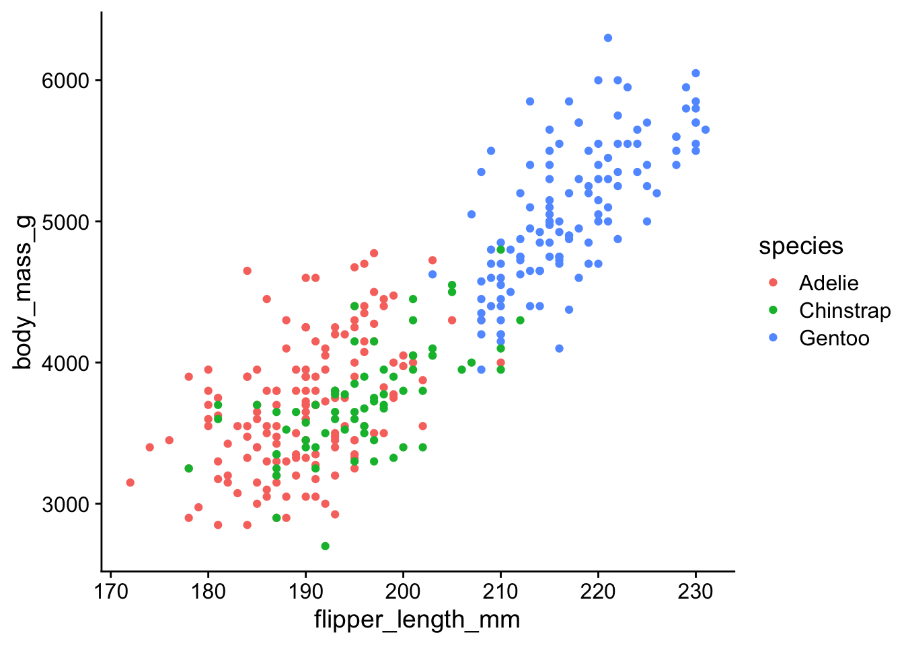
ggplot(penguins, aes(flipper_length_mm, body_mass_g, color = species)) +
geom_point(na.rm = TRUE) +
theme_minimal_grid()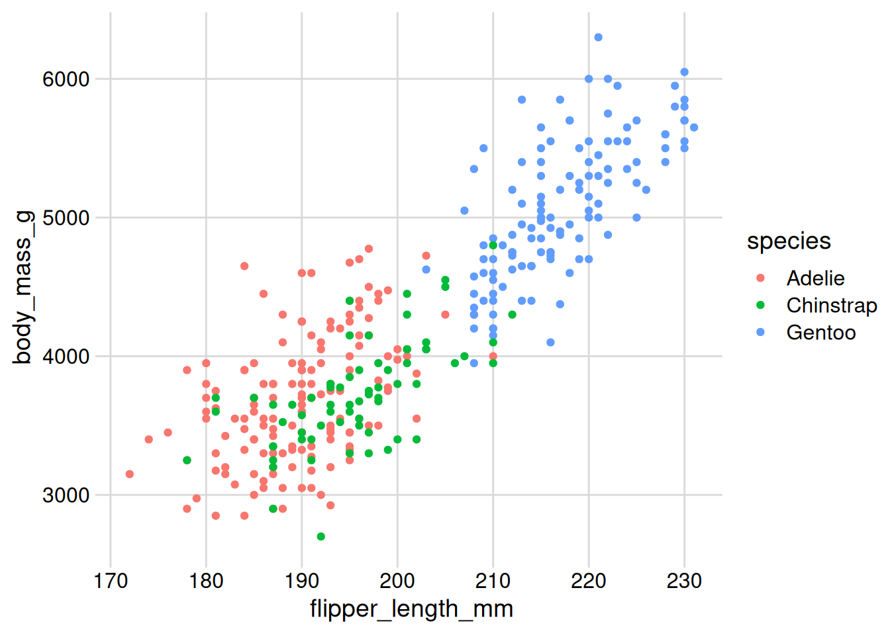
ggplot(penguins, aes(flipper_length_mm, body_mass_g, color = species)) +
geom_point(na.rm = TRUE) +
theme_minimal_hgrid()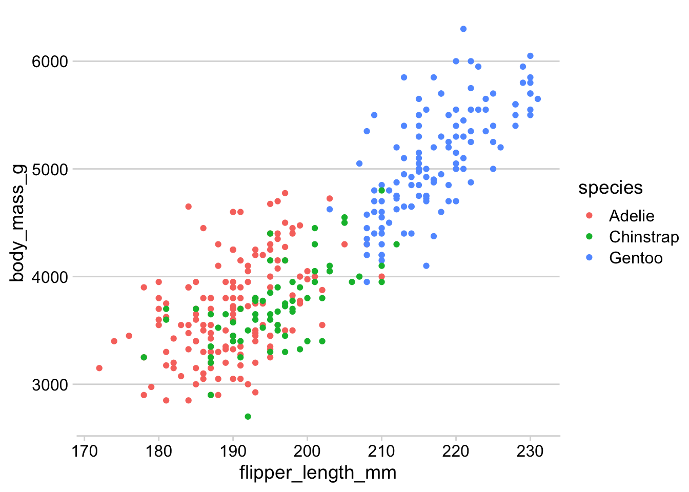
Compare the visual appearance of theme_minimal() from ggplot2 to theme_minimal_grid() from cowplot. What similarities and differences to you notice? Which do you prefer? (There is no correct answer here, just be aware of the differences and of your preferences.)
#| eval: TRUE
#| echo: TRUE
# build all the code for this exercise
# solution
ggplot(penguins, aes(flipper_length_mm, body_mass_g, color = species)) +
geom_point(na.rm = TRUE) +
theme_minimal()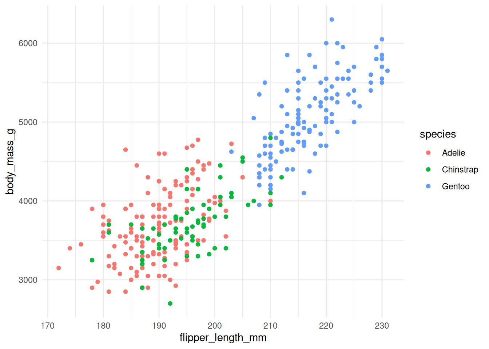
ggplot(penguins, aes(flipper_length_mm, body_mass_g, color = species)) +
geom_point(na.rm = TRUE) +
theme_minimal_grid()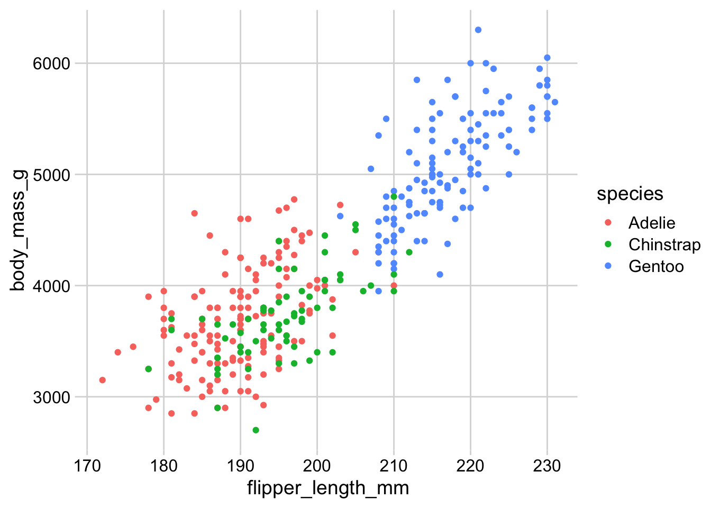
Modifying theme elements
You can modify theme elements by adding a theme() call to the plot. Inside the theme() call you specify which theme element you want to modify (e.g., axis.title, axis.text.x, panel.background, etc) and what changes you want to make. For example, to make axis titles blue, you would write:
theme(
axis.title = element_text(color = "blue")
)There are many theme settings, and for each one you need to know what type of an element it is (element_text(), element_line(), element_rect() for text, lines, or rectangles, respectively). A complete description of the available options is available at the ggplot2 website: https://ggplot2.tidyverse.org/reference/theme.html
Here, we will only try a few simple things. For example, see if you can make the legend title blue and the legend text red.
# make the legend title blue and the legend text red
ggplot(penguins, aes(flipper_length_mm, body_mass_g, color = species)) +
geom_point(na.rm = TRUE)
Now color the area behind the legend in "aliceblue". Hint: The theme element you need to change is called legend.background. There is also an element legend.box.background but it is only visible if legend.background is not shown, and in the default ggplot2 themes that is not the case.
# build all the code for this exercise
# solution
ggplot(penguins, aes(flipper_length_mm, body_mass_g, color = species)) +
geom_point(na.rm = TRUE) +
theme(
legend.background = element_rect(fill = "aliceblue")
)Another commonly used feature in themes are margins. Many parts of the plot theme can understand customized margins, which control how much spacing there is between different parts of a plot. Margins are typically specified with the function margin(), which takes four numbers specifying the margins in points, in the order top, right, bottom, left. So, margin(10, 5, 5, 10) would specify a top margin of 10pt, a right margin of 5pt, a bottom margin of 5pt, and a left margin of 10pt.
Try this out by setting the legend margin (element legend.margin) such that there is no top and no bottom margin but 10pt left and right margin.
# build all the code for this exercise
# solution
ggplot(penguins, aes(flipper_length_mm, body_mass_g, color = species)) +
geom_point(na.rm = TRUE) +
theme(
legend.background = element_rect(fill = "aliceblue"),
legend.margin = margin(0, 10, 0, 10)
)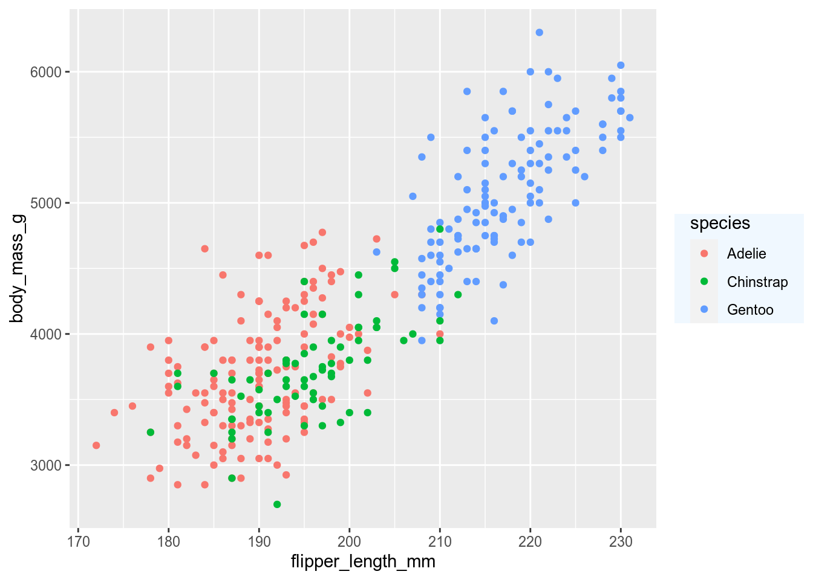
There are many other things you can do. Try at least some of the following:
- Change the horizontal or vertical justification of text with
hjustandvjust. - Change the font family with
family.1 - Change the panel grid. For example, create only horizontal lines, or only vertical lines.
- Change the overall margin of the plot with
plot.margin. - Move the position of the legend with
legend.positionandlegend.justification. - Turn off some elements by setting them to
element_blank().
1 Getting fonts to work well can be tricky in R. Which specific fonts work depends on the graphics device and the operating system. You can try some of the following fonts and see if they work on app.terra.bio: "Palatino", "Times", "Helvetica", "Courier", "ITC Bookman", "ITC Avant Garde Gothic", "ITC Zapf Chancery".
Writing your own theme
You can write a theme by
theme_colorful <-
theme_bw() +
theme(
text = element_text(color = "mediumblue"),
axis.text = element_text(color = "springgreen4"),
legend.text = element_text(color = "firebrick4")
)Hint: Do you have to add theme_colorful or theme_colorful()? Do you understand which option is correct and why? If you are unsure, try both and see what happens.
# build all the code for this exercise
# solution
ggplot(penguins, aes(flipper_length_mm, body_mass_g, color = species)) +
geom_point(na.rm = TRUE) +
theme_colorful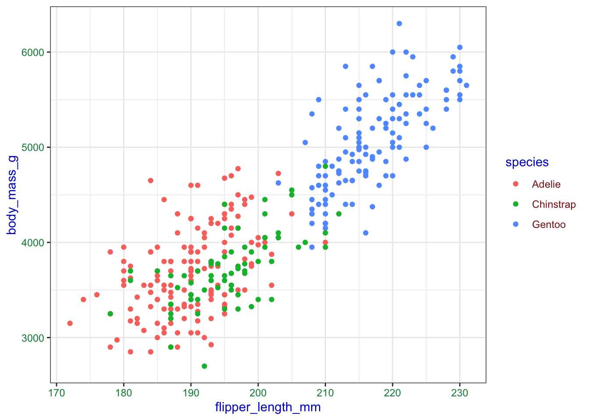
Now write your own theme and then add it to the penguing plot.
# build all the code for this exercise
# solution
mytheme <- theme_minimal_grid() +
theme(
panel.border = element_rect(size = 1, color = "black"),
legend.box.background = element_rect(size = 0.5, color = "black")
)Warning: The `size` argument of `element_rect()` is deprecated as of ggplot2 3.4.0.
ℹ Please use the `linewidth` argument instead.ggplot(penguins, aes(flipper_length_mm, body_mass_g, color = species)) +
geom_point(na.rm = TRUE) +
mytheme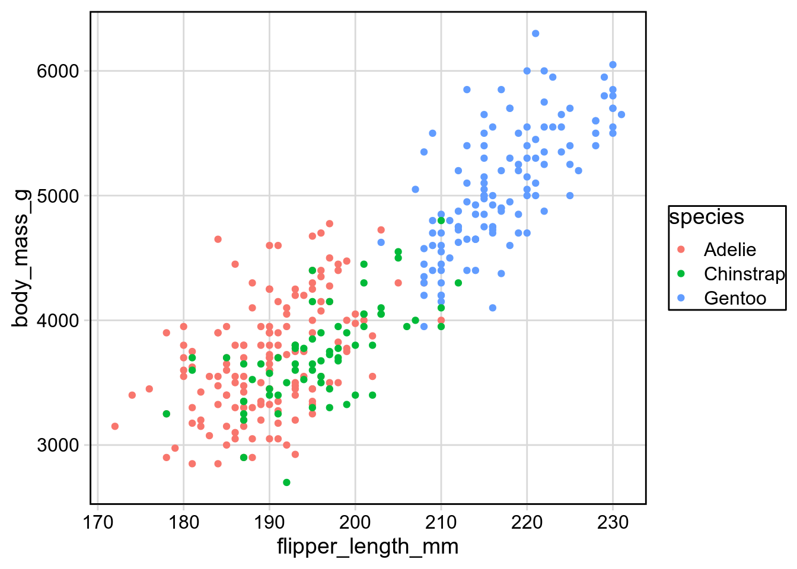